Two numbers
Argentina reports a fiscal surplus. Since January 2024 the cumulative reported result is +4.7tn pesos. Under the accrual convention that governs headline fiscal statistics internationally, the same period is a deficit of 109.6tn. For 2025 alone: +1.45tn reported, −74.35tn accrued — about 8.7% of GDP.
Both numbers are correct. They answer different questions, and the gap between them is one thing: interest that is never paid in cash.
Argentina reports on a cash basis. Interest on the peso instruments funding the Treasury — principally LECAP and BONCAP — is not paid out. It is added to principal at each capitalisation date and recorded below the line as a change in the debt stock, rather than above the line as an expense. Under GFSM 2014, interest is an expense when it accrues, whether or not anyone writes a cheque.
Between April 2024 and June 2026 that capitalised interest totalled 114.3tn pesos. This note reconstructs the series from 28 consecutive monthly debt-operations reports and traces where the bill came from — which turns out to be the central bank.
What a capitalising bond does
A capitalising instrument pays no periodic coupon. Interest is added to principal at each capitalisation date and the whole accreted balance is repaid at maturity. The Treasury has no cash outflow until the bond matures, and if it is rolled at maturity, no cash outflow then either.
The LECAP is the workhorse. Its official redemption formula is VPV = VNO × (1 + TEM)t, where TEM is the monthly effective rate set at auction and t the months elapsed on a 30/360 basis. The exponent is the whole mechanism: interest compounds monthly inside the instrument and never leaves it. A capitalising bond accrues unpaid interest faster than a coupon-paying bond at the same rate, and the accretion is convex in maturity.

Where the bill came from
The capitalisation is not an artefact of instrument design. It is the residue of the central bank clean-up, and understanding the transfer is what makes the size of the numbers intelligible.
Before 2024 the BCRA carried remunerated liabilities — LELIQ and passive repos — whose interest cost peaked near 10% of GDP. That cost was quasi-fiscal: it accrued on the central bank's balance sheet and never appeared in the Treasury's fiscal result. It was moved to the Treasury in three steps.
Step 1, December 2023 to March 2024. LELIQ fell from 13.6tn to effectively zero while passive repos rose from 5.8tn to 30.4tn. The liability did not shrink; it shortened to overnight and stayed at the BCRA. What changed was that the rate could now be cut aggressively in real terms, which slowed the compounding.
Step 2, July to September 2024 — the actual transfer. Decreto 602/2024 authorised the Letra Fiscal de Liquidez, issued with a nominal value of 20tn. Its terms matter. Interest accrued at the BCRA's policy rate and capitalised daily. It was transferable only between the BCRA and banks. And critically, the Treasury did not receive cash for it — it swapped LEFI for Treasury paper the BCRA already held, including non-transferable letters.
That last point is the one usually missed. Gross Treasury debt did not jump, because LEFI was exchanged for debt the BCRA already owned. What changed was the price of that debt. Non-transferable letters paid far below market; LEFI paid the policy rate and compounded daily. The operation converted cheap, captive, intra-public-sector debt into expensive, market-rate debt, and simultaneously moved the interest from the BCRA's income statement to the Treasury's. The BCRA then sold LEFI to banks and used the proceeds to extinguish its repos, which fell from 18.0tn in June 2024 to zero by September.
Step 3, 10 July 2025. LEFI was deactivated. Banks rolled into LECAP and BONCAP. This is the single largest month in the capitalisation series, 11.6tn. Removing LEFI also removed a predictable overnight anchor — which is the subject of the second half of this note.
At every step the liability remained remunerated and the interest remained invisible in the headline fiscal result: first because it belonged to the central bank, then because it capitalised.
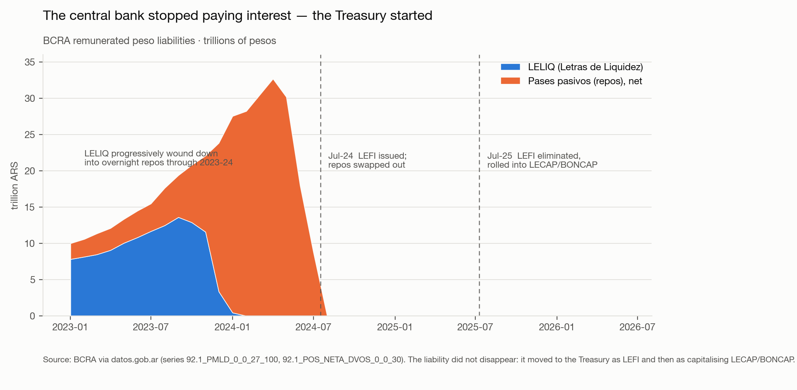
The two bases, side by side
The reported surplus is not a misstatement. The cash result measures the financing requirement; the accrual result measures the change in net worth. Both are internally coherent. But the cash number is not comparable to an accrual-basis surplus from another sovereign, and it is not the number a solvency assessment needs.


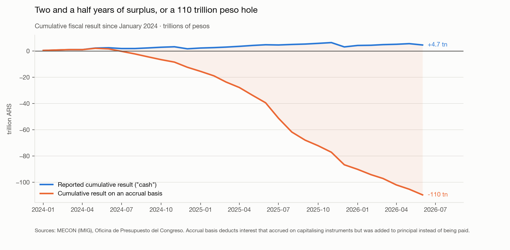
In 2025 capitalised interest was 7.4 times the interest actually paid in cash; in the first half of 2026, 4.2 times.
Why the accrual deficit is now shrinking
On a trailing twelve-month measure the deficit deepened through 2025, troughed at −9.7% of GDP in December 2025, and has improved every month since, to −8.3% in June 2026. On a monthly annualised basis the improvement is sharper: 2026 has run between −3.9% and −6.2%, against −18% at the July-2025 peak.

Monthly capitalisation is, to a first approximation, the capitalising stock times its effective monthly rate. Decomposing the change into the two effects gives an unambiguous answer, and the build-up and the decline have different causes.
The rise through mid-2025 was a stock effect: the capitalising base grew from roughly 5% of peso debt in March 2024 to 45% by August 2025, multiplying roughly twentyfold from around 6tn to 120tn.
The decline since December 2025 is almost entirely a rate effect. The implied monthly rate halved, from 5.0% to 2.5%, tracking the collapse in peso rates. Over the same period the capitalising stock did not shrink — it grew another 7%, to 134tn. The stock effect works against the improvement and is simply swamped by the rate.
That distinction matters. Nothing structural has changed: the Treasury has not reduced its reliance on capitalising instruments, and the base on which interest accrues is larger than it has ever been. The deficit is shrinking because the price of that stock fell. If disinflation stalls or rates have to be defended again — as they were between August and October 2025, when the deposit rate jumped from 2.70% to 4.05% monthly in three months — the accrual deficit reprices upward immediately, from a bigger base.
What it did to the debt stock
Performing peso debt rose from 121.7tn in March 2024 to 333.9tn in June 2026, an increase of 212.3tn. Decomposing that increase gives the central result: capitalisation of interest accounts for +114.3tn, or 53.8%; valuation adjustments from CER and FX indexation for +104.6tn, or 49.3%; and net new issuance for −6.6tn, or −3.1%.
Over twenty-seven months the Treasury placed slightly less peso capital at auction than it redeemed. Essentially the entire growth of the peso debt stock came from two automatic mechanisms — interest capitalising inside instruments, and indexation revaluing principal. Neither passes through the auction calendar, and neither appears as an expense in the budget. The 114.3tn is, in substance, debt issuance that required no bid, no cut-off rate and no budget line.

Scaled against output, cumulative capitalisation is worth 12.0 points of GDP on the peso debt ratio: 35.1% of GDP as reported in June 2026, against 23.1% excluding it. That is an accounting decomposition rather than a counterfactual — had the interest been paid in cash, the Treasury would have had to fund it somehow. What the gap measures is how much of the debt stock accumulated outside both the auction process and the budget.
The ratio itself has not deteriorated. Peso debt has hovered between roughly 31% and 38% of GDP throughout and is lower now than in mid-2024, because nominal GDP grew at least as fast as the debt. That is the honest counterweight to the headline — but it is a disinflation-dependent result. If disinflation continues while TEMs stay where they are, the real rate on that stock rises and the ratio stops being self-stabilising.

A correction to an earlier version
An October 2025 version of this work added only the current month's capitalised interest to a year-to-date interest total, rather than cumulating it alongside the other year-to-date lines. That reproduces the published figures but understates the gap substantially: on a consistent year-to-date basis, full-year 2025 is −8.7% of GDP rather than approximately −1.6%. The restated series is used throughout.
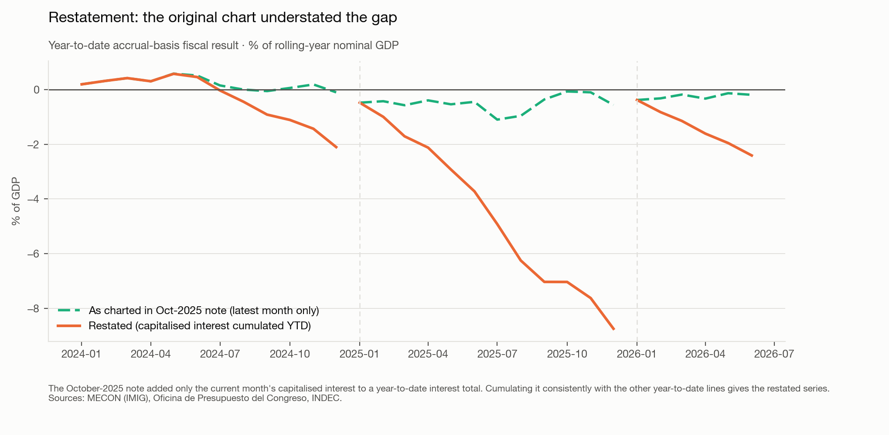
The other half: a central bank with no policy rate
Argentina has no policy rate. Not a rate held constant — no rate. The BCRA formally abandoned the concept in July 2025 and the published series ends on 10 July 2025.
The regime targets quantities: private transactional M2 as the nominal anchor, with the monetary base controlled principally through reserve requirements. The interest rate is an outcome. This inverts the Federal Reserve's design, which supplies whatever reserves the system demands and sets the price administratively. Argentina fixes the quantity and lets the price clear.
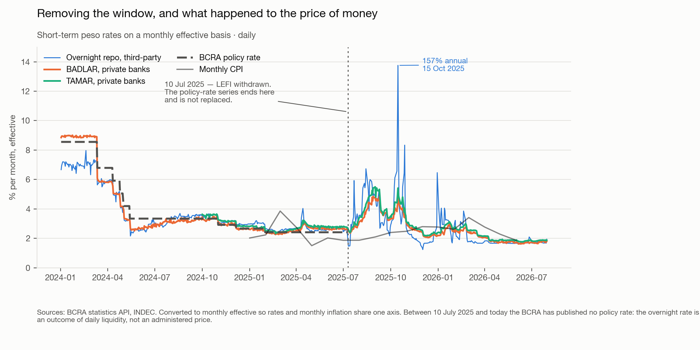
The transition cost was visible. Through the first half of 2025, with LEFI still operating, the overnight rate averaged 32.6% nominal with a daily standard deviation of 2.9pp. In the month LEFI was withdrawn the standard deviation rose to 11.4pp. Between August and October 2025, with an election and a currency band to defend simultaneously, it reached 22.6pp — and the rate printed 157% annualised on 15 October, eleven days before the vote, against 26% at the low of the same quarter.
Since March 2026 the daily standard deviation has been 0.9pp, the calmest stretch in the series. But that calm was produced by reserve-requirement design and liquidity management, not by a posted price.
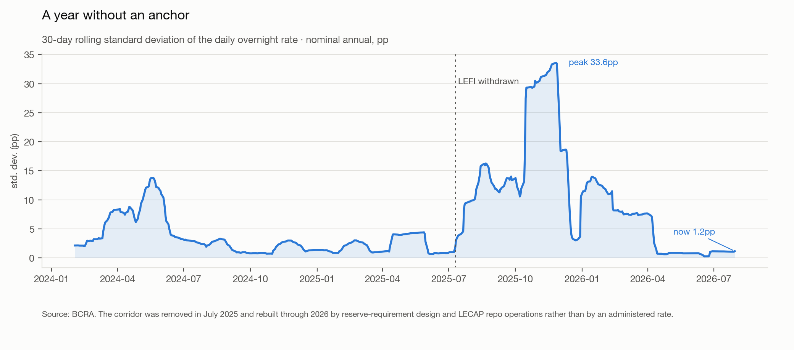
The instrument that actually does the work is the reserve requirement — 45% on peso sight deposits at the largest banks, measured daily, and largely unremunerated. The Fed's requirement has been zero since March 2020. Several of the 2025 changes are monetary instruments wearing a prudential hat: moving from monthly-average to daily measurement removes a bank's ability to run a deficit early in the month and make it up later, which is exactly the intertemporal smoothing that damps overnight volatility.
One rule closes the loop between the two halves of this note. Banks may meet part of a 45% requirement with public securities bought at primary auction, with a minimum 60-day tenor. That creates captive primary demand for exactly the instruments the Treasury needs to roll. The reserve requirement supports LECAP demand, LECAP secondary yields set the repo reference rate, and LECAP capitalisation is what keeps interest out of the reported fiscal result.
How the base actually moves
For January to July 2026 the factors-of-variation identity reads, in trillions of pesos: base money +2.1, made up of FX purchases from the private sector +18.6, FX sold to the Treasury −9.9, profit transfers to the Treasury +24.4, the Treasury residual −22.8, repos and LELIQ 0.0, LEFI 0.0, and other −8.2.
Three things are visible at once. The reserve-accumulation programme is the sole expansionary engine. The Treasury is a large gross mover and a net drain. And the entire sterilisation apparatus contributes exactly nothing, because it no longer exists.
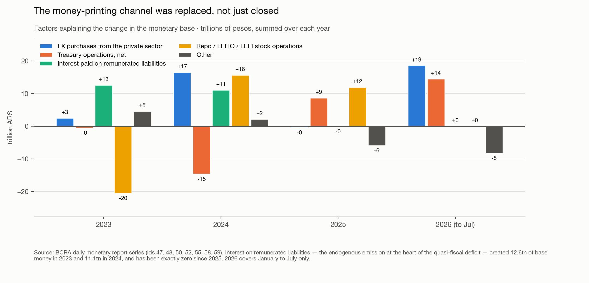
The line to watch across years is interest on remunerated liabilities. It created 12.6tn pesos of base money in 2023 and 11.1tn in 2024 — money printed for no reason other than servicing the central bank's own debt — and has been zero since 2025. That is the quasi-fiscal deficit measured in emission rather than in percent of GDP, and it is the single clearest success of the whole programme. It deserves stating plainly alongside the criticism above: the obligation was moved to the Treasury and hidden in capitalisation, but the monetary financing of it genuinely stopped.
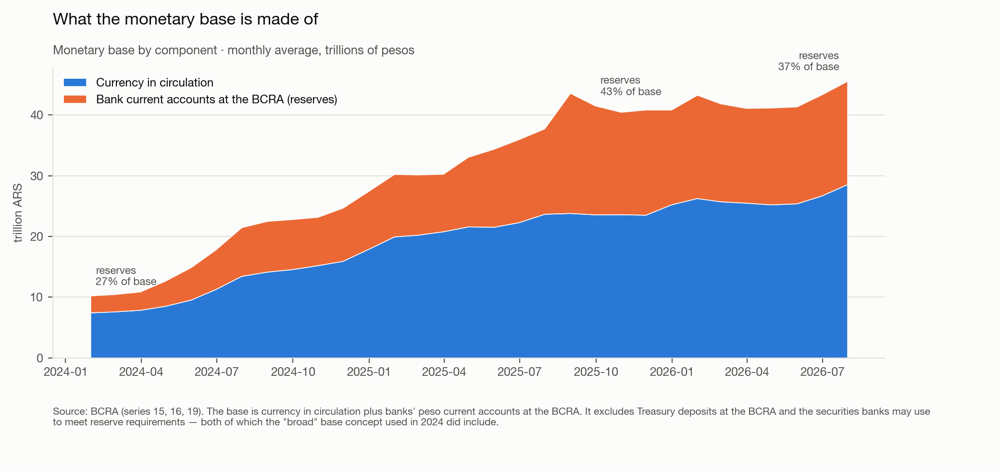
Why inflation has not followed the base
A regime that targets quantities invites the obvious test: does the quantity explain the price level? Over the programme as a whole, emphatically yes. Over the past year, no — and the usual shorthand ("the base has been held constant and inflation is still 32%") misstates both halves of the sentence.
The base was expanded, not held constant. Deflated by CPI it rose 91% between January 2024 and August 2025 and remains 56% above its January 2024 level. It has been falling in real terms only since early 2026, and is now contracting at about 8% year on year, with real M3 down about 4%. The nominal series has been roughly flat for a few months; the real series has not been flat at any point.
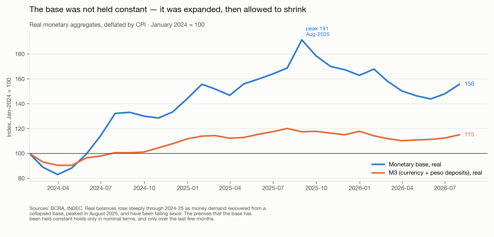
The 2024–25 expansion was the central bank supplying money into a recovering demand for it, after a collapse that had driven real balances to extreme lows. Supplying money into rising demand is not inflationary, and the disinflation from 289% to the low thirties happened alongside it. What changed in late 2025 is that real balances stopped rising while inflation stopped falling.
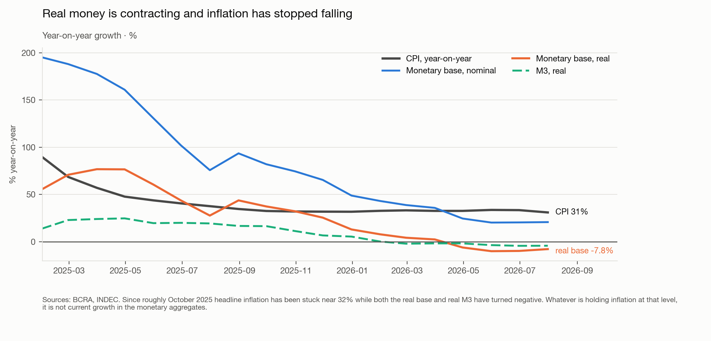
Whatever is holding inflation at roughly a third, it is not current growth in the aggregates, which is negative in real terms. Three things are doing the work. Indexation — CER is up 33.4% year on year, the rental index 31.5%, the UVA 33.3%; contracts reprice off lagged inflation more or less independently of current money. Relative-price correction — regulated prices are running at about 3.5% a month against 2.6% for the headline, as years of frozen tariffs unwind. And an asymmetric anchor — the peso is depreciating 17.4% year on year against 31% inflation, roughly 12% of annual real appreciation, so tradable goods inflation is suppressed by the band while services and regulated prices carry the whole adjustment.
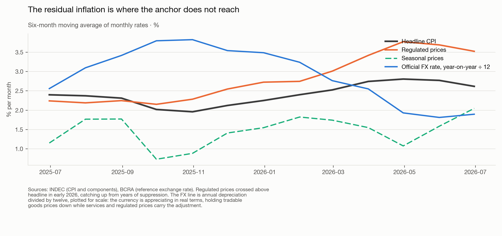
Two magnitudes sit outside the aggregate and both matter. Bank credit to the private sector is growing 40.2% year on year and roughly doubled in real terms over the programme — monetary expansion through the banking system, invisible in M0. And emission did not stop, it changed channel and was warehoused: the BCRA issued 18.6tn pesos in the first seven months of 2026 buying foreign exchange, which netted to only +2.1tn of base growth because Treasury operations drained 22.8tn back out. Those pesos were not destroyed. Public sector time deposits are up 142.4% year to date. There is a large stock of issued pesos parked in a Treasury account at the central bank, outside the base, one spending decision away from being inside it.
The re-monetisation bet
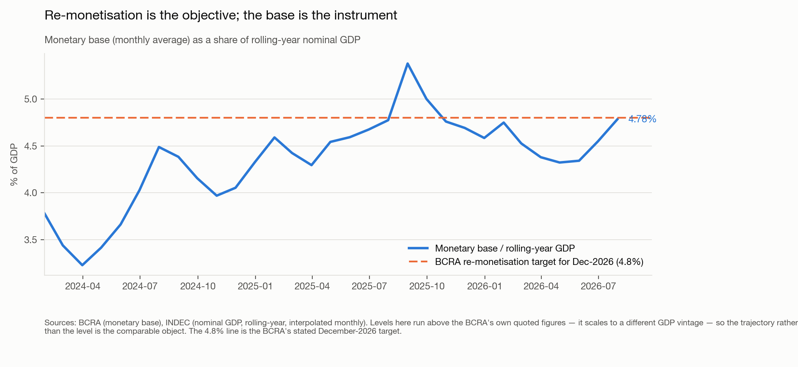
The programme is about USD10bn of purchases, rising to USD17bn if money demand recovers faster, executed at roughly 5% of daily FX market volume. Gross reserves stood at USD49.2bn at the end of July 2026, against USD23.2bn at the 2024 low.
What could break
The framework has no shock absorber. There is no standing deposit facility, no administered rate, no passive repo stock, and a rationed lending window. October 2025 is the demonstration: when the FX band and an election collided, the only variable free to move was the overnight rate, and it moved by more than a hundred points. The current calm is real, but it is the calm of a system that has not been tested since. A floor system absorbs that kind of shock in quantities; this one absorbs it in price.
The anchor and the fiscal instrument are the same asset. LECAP secondary yields set the repo reference rate, LECAP primary subscriptions satisfy part of the reserve requirement, and LECAP capitalisation keeps interest out of the reported fiscal result. That is efficient while the Treasury's rollover is comfortable. If it stops being comfortable, the same price move raises the Treasury's deferred interest bill, tightens bank liquidity, and moves the monetary operating rate — three channels that are supposed to be independent, moving together.
Cash flow is the binding constraint, and that is exactly what the cash presentation captures. With no access to international capital markets, the government cannot absorb a cash deficit; Argentina's past crises were triggered by modest cash gaps, not by debt stocks. Deferring interest into principal buys precisely the thing that is scarce. The risk is not the accounting. It is that a stock now equal to roughly a third of GDP, built substantially out of interest that was never funded, has to be rolled continuously at short maturities — and rollover is a market-access question that can turn quickly.
A note on the numbers
The accrual entry does not exist in the budget system: the two systems that record budget execution do not carry it at all. It surfaces only through the debt-stock reconciliation, is sourced from debt records rather than fiscal records, and sits around page six of a monthly report that is not the well-known one. Monthly capitalised interest and the peso debt stock were extracted from 28 consecutive OPC debt-operations reports covering March 2024 to June 2026; fiscal aggregates, nominal GDP and CPI come from the datos.gob.ar time-series API.
Four traps will silently corrupt a reconstruction: many of the source PDFs are image-based and need OCR; the units changed from millones to miles de millones in January 2026, a 1,000× error if assumed; Spanish number format uses "." for thousands and "," for decimals; and the instrument perimeter drifts across years. The identity closes tightly as a check — for June 2026, net capital cancellations of −$8,168bn, valuation adjustments of +$5,192bn and capitalisation of +$3,296bn sum to +$320bn against an observed stock change of +$319bn. The reconstruction reproduces every independently published control total.